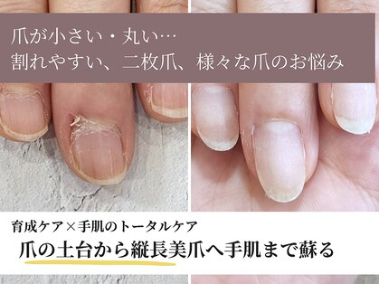
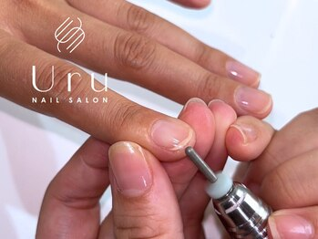
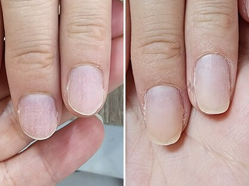
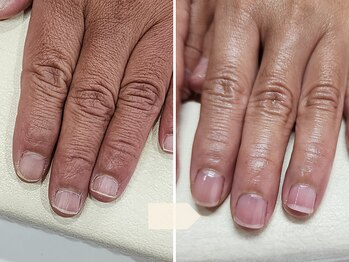
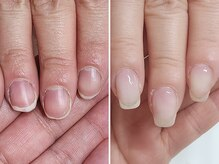

深爪、噛み癖、小さい・丸い爪、割れやすい爪、広がり爪——
その爪悩み、皮膚科学に基づいた育成メソッドで根本からケアします。
最短3ヶ月、90%以上のお客様が変化を実感。
初回限定「爪診断+育成ネイルケア100分」¥6,980

来店されるお客様の多くが、こんな爪・指先の悩みを抱えています。
技術だけでなく、丁寧なカウンセリングと安心できる空間づくりにこだわっています。
お一人おひとりの爪悩みの原因を徹底分析し、健康な爪が生える土台から整えるオーダーメイドケアを行います。

自爪を極力削らない技術を採用。パラジェル・フィルインにも対応し、爪への負担を抑えながら育成します。
周りを気にせずリラックスできる完全個室。Netflix視聴も可能で、施術時間そのものを癒しの時間に。
初来店の9割以上が自爪育成初心者。丁寧なカウンセリングと継続ケアで、着実な変化を実感いただいています。
実際にご来店いただいたお客様の爪の変化の一例です。



ビフォーアフターや育成の経過、スタッフの日常はInstagram・Threadsで随時更新しています。